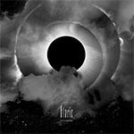
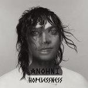
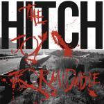

Music Reviews
-
Modern Baseball Holy Ghost
The Philadelphia quartet's deeply felt and passionate Holy Ghost is driven from sheer impulse, all while touching lives with their strong sense of community.
Juan Edgardo Rodriguez reviews... -

Car Seat Headrest Teens of Denial
Will Toledo's first high-profile effort adopts an amiable trait of character that makes him affecting in his misery. It's also a fantastic rock record.
Juan Edgardo Rodriguez reviews... -

Katy B Honey
Katy B sends us Honey from the depths of London's club scene, mixing sundry beats with diva yowls. The question is what kind of party does she want us to enjoy.
Luiza Lodder listens closely... -

Alaric End of Mirrors
With End of Mirrors, Alaric continues to beautify the bleak, their dark brand of metallic post-punk aggression coexisting with delicacy and grace.
Sean Caldwell reviews... -

Anohni Hopelessness
Antony Hegarty has rebranded her image in Hopelessness, a politcally-charged call-to-arms that illustrates a devastating portrait of a world that’s in dire need of some reformation.
Juan Edgardo Rodríguez reviews... -

King Gizzard & the Lizard Wizard Nonagon Infinity
King Gizzard's never-ending psychedelic excursion makes for one delirious head trip...or nightmarish running playlist.
Juan Edgardo Rodríguez reviews... -

Deftones Gore
Gore is a listen as complex and engrossing as we’ve come to expect from Deftones, and they continue to be a band that matures organically, becoming more and more fluid in their own craft by the record.
Carl Purvis reviews... -

Frightened Rabbit Painting of a Panic Attack
The Scottish quintet's fifth effort is relentlessly dour and downbeat despite its more optimistic variants, which comes as a surprise for a band that has always held high with sprawling conviction.
Juan Edgardo Rodríguez reviews... -

PJ Harvey The Hope Six Demolition Project
PJ Harvey's latest release continues her trend of making incredible, unpredictable music. While the words on this politically-charged record don't always work, it's still a powerful, vital piece of art that deserves many, many listens.
Joe Marvilli goes on a journey with PJ Harvey... -

The Joy Formidable Hitch
The Joy Formidable's latest album finds them expanding their sound, adding new, expressive colors to their palette, but still keeping their roots intact.
Joe Marvilli hitches to...